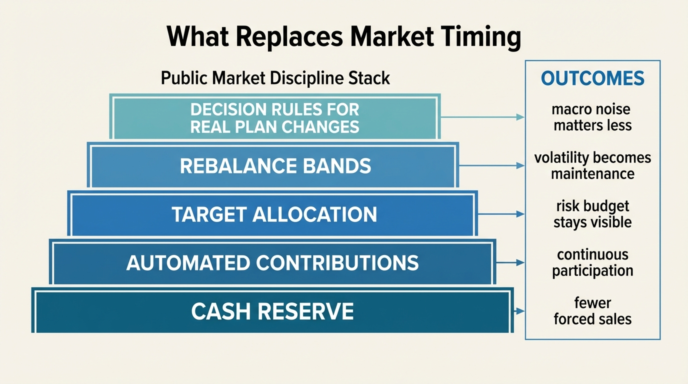

The Timing Fallacy in Public Markets
Public markets are volatile enough to tempt prediction and liquid enough to make action feel intelligent. That combination is expensive. Most households do not underperform because they chose equities over cash at the wrong moment once. They underperform because they keep converting price movement into timing decisions, then convert those decisions into realized return drag.
Established fact: broad public-market exposure has produced strong long-run real wealth creation despite repeated crashes, recessions, and valuation resets. Established fact: realized investor returns often lag the returns of the funds they own because investors add capital after strong performance, pull capital after weak performance, and interrupt compounding with reactive allocation changes. Established fact: missing a small number of strong market days materially changes long-horizon outcomes. The timing problem is therefore less about forecasting genius than about behavioral asymmetry. Investors usually sell after pain and buy after reassurance, which places their largest decisions at the wrong side of the cycle.
Core thesis: the timing fallacy is the belief that tactical entry and exit decisions improve household outcomes more reliably than disciplined participation. In public markets, the opposite is usually true. The main edge for households is process quality: contribution continuity, rebalancing rules, liquidity reserves, and risk sizing that prevent forced exits during stress.

Why Timing Feels Rational Even When It Usually Fails
Timing is seductive because it sounds prudent. Markets look dangerous after large declines. Valuations look stretched after long rallies. News flow creates the sense that the next move should be obvious if one is informed enough. Public markets add a second temptation: liquidity. Because assets can be sold instantly, households confuse the ability to act with the obligation to act. In practice that often turns market access into a mechanism for self-interruption.
The deeper issue is that timing decisions usually occur under asymmetrical information and asymmetrical emotion. When markets fall, the investor sees realized losses, recession headlines, and employment risk in the same field of view. Selling feels like risk control. When markets rebound, the same investor wants confirmation before re-entering. By the time confirmation arrives, much of the recovery is already embedded in prices. This is how buy high and sell low happens without anyone intending it.
That pattern is visible in the data. Asset-demand research using household holdings and flow records shows that less affluent households tend to sell U.S. equities in downturns, while ultra-high-net-worth households buy and stabilize flow. Morningstar's investor-return work reaches a similar practical conclusion from a different angle: fund investors often earn less than the funds themselves because money arrives and leaves at the wrong times. The mechanism is not mysterious. Cash is emotionally deployed after returns, not before them.
The Real Cost Is Missing Recovery, Not Just Selling At The Bottom
A household does not need to sell at the exact bottom to suffer timing damage. It only needs to leave the market during the recovery cluster that follows large drawdowns. Public-market rebounds are often concentrated. A short set of strong days or weeks can account for a large share of multi-year gains. Schwab's long-running work on market-entry timing illustrates this well: even an investor who repeatedly chooses the worst annual entry point can still outperform someone who sits in cash, while the investor who waits for the “right” time often pays an opportunity cost larger than the benefit of tactical patience.
This is where the fallacy becomes structural rather than psychological. Timing turns compounding into a sequence of binary judgments. If each judgment has to be right twice, once on exit and once on re-entry, the odds deteriorate quickly. A household that sells after fear and re-enters after reassurance does not need to be wrong by much. Small timing errors compound because the missed interval is usually the interval when risk assets reprice upward fastest.
The public-market version of optionality is therefore inverted relative to what many investors imagine. Liquidity is useful because it gives the household flexibility when life changes. It is harmful when it invites constant re-underwriting of the same long-term plan. If the plan is sound, liquidity should mostly support rebalancing and cash management, not episodic abandonment.
Why The Average Household Is Structurally Bad At Timing
The first constraint is cash-flow dependence. Households need liquidity for rent, debt service, insurance, childcare, taxes, and job shocks. That means bad market periods are often also bad personal-finance periods. Timing decisions are therefore rarely made from a detached strategic position. They are made under stress, which biases them toward de-risking after prices have already fallen.
The second constraint is benchmarkless decision-making. Many investors do not have a written policy that defines target allocation, rebalance bands, emergency-liquidity needs, or the conditions under which they would change strategic exposure. Without a policy, every market move demands a fresh emotional judgment. That is not a timing edge. It is an invitation to inconsistency.
The third constraint is narrative contagion. Public markets provide infinite explanations in real time. A rally can always be labeled euphoric. A selloff can always be labeled the start of something worse. Timing strategies often borrow certainty from narrative density, not from real predictive power. This is why the timing problem belongs beside The Overconfidence Cycle. The investor mistakes interpretive fluency for actual foresight.
What Timing Gets Confused With
The first confusion is between timing and valuation awareness. Valuation matters for long-run expected returns. That does not mean tactical all-in or all-out calls are the correct household response. The practical response may be slower expected return assumptions, higher savings requirements, or modest allocation tilts rather than dramatic exits.
The second confusion is between timing and rebalancing. Rebalancing is a rules-based response to drift relative to a target allocation. It trims what has run and adds to what has lagged. Timing is usually discretionary and directional. One is policy maintenance. The other is prediction. Households often say they are timing when they would benefit more from documented rebalance rules.
The third confusion is between timing and liquidity management. Holding a reserve for near-term spending, taxes, or career volatility is prudent. Selling long-duration assets because the household never separated long-term capital from near-term cash needs is not tactical insight. It is a balance-sheet design failure. That is why this topic connects directly to The Liquidity Illusion and The Asset-Rich, Cash-Poor Paradox. A weak liquidity stack turns market volatility into forced timing.

What A Better Public-Market Process Looks Like
- Separate strategic capital from operating cash. Emergency reserves and near-term liabilities should not depend on the next quarter of market returns.
- Automate participation. Ongoing contributions reduce the chance that capital deployment depends on one confidence-sensitive decision point.
- Write rebalance rules. Calendar-based and band-based rebalancing can convert volatility into disciplined maintenance rather than narrative reaction.
- Change assumptions before changing exposure. If valuations look demanding, lower expected-return assumptions or raise savings rates before making total allocation jumps.
- Limit the number of macro calls that matter. A household does not need to be right about every election, rate move, or earnings season to compound successfully.
This is not an argument for thoughtless passivity. It is an argument for using public markets according to their actual household advantage. The advantage is low-cost scalable access to productive assets, not continuous tactical superiority. Investors who can preserve continuity through downturns and rebalance rationally usually outperform investors who keep demanding emotional certainty before they stay invested.
Known, Inferred, And Unknown
| Category | Assessment |
|---|---|
| Known | Investor returns frequently trail fund returns because households allocate capital after strong performance and withdraw after weak performance. |
| Known | Long-run outcomes are highly sensitive to staying invested through recovery periods, because a limited number of strong market sessions can drive a disproportionate share of cumulative gains. |
| Known | Less affluent households are more likely than very wealthy households to sell equities during downturns, which turns stress into realized timing drag. |
| Inferred | The best practical household response to uncertain valuations is usually stronger process design rather than discretionary all-in or all-out market calls. |
| Unknown | Which valuation-aware, rules-based tactical overlays can improve household outcomes after taxes and behavior costs without simply recreating the same timing problem in more complex form. |
The Practical Bottom Line
The timing fallacy survives because it flatters the investor. It suggests that discipline is less important than insight, and that market participation depends on being sufficiently convinced by the next story. Public markets usually reward the opposite stance. They reward households that separate liquidity from long-term capital, stay invested according to policy, and let rebalancing replace reactive conviction.
For WealthMeter readers, the useful question is not “When should I get out?” It is “What design flaw would force me to get out at the worst time?” That reframing moves the problem from forecasting to architecture. In household finance, architecture usually beats prediction.
Further Reading Inside The Site
This article connects directly to The Liquidity Illusion, The Overconfidence Cycle, and The Indexing Saturation Problem. Together they show how public-market outcomes depend less on perfect calls than on liquidity design, behavior control, and exposure policy.
Source List
Morningstar Research. Mind the Gap. Ongoing series on investor returns versus fund returns.
Gabaix X, Koijen RSJ, Mainardi F, Oh S, Yogo M. Asset Demand of U.S. Households. NBER Working Paper 32001. 2023.
Charles Schwab. Does Market Timing Work?. Historical comparison of best, worst, and delayed annual entry timing.
S&P Dow Jones Indices. SPIVA U.S. Scorecard. Long-horizon evidence on active-manager underperformance after fees.
Frazzini A, Lamont OA. Dumb Money: Mutual Fund Flows and the Cross-Section of Stock Returns. NBER Working Paper 11526. 2005.
Barber BM, Odean T. Trading Is Hazardous to Your Wealth. Journal of Finance. 2000.
Vanguard. How to keep emotions out of investing. Investor behavior guidance grounded in long-term portfolio discipline.